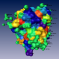
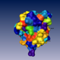
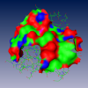
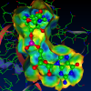

Molecular surfaces are an important tool for the investigation of molecules. We therefore give a few examples that show some of the abilities of Molecular Option's molecular surface tool.
The last demo gives a simple example how the molecular interface tool can be used.
 2RNT.pdb (1)
The demo computes the surface considering all atoms contained in the pdb file including water atoms. The surface is colored according to the residues' type. 2RNT.pdb (2)
In this demo the water atoms have been excluded from the computation. We use the same coloring as above. 2RNT.pdb (3)
This molecular surface demo shows an example for the computation of partial surfaces. Here the surface was computed for all atoms within a distance of 5Å from all atoms of the residue HET105.RNA molecule
BondAngleView and transparent solvent excluded surface of an RNA molecule. Nuclease
Molecular interface between a substrate and the ribonuclease T1.